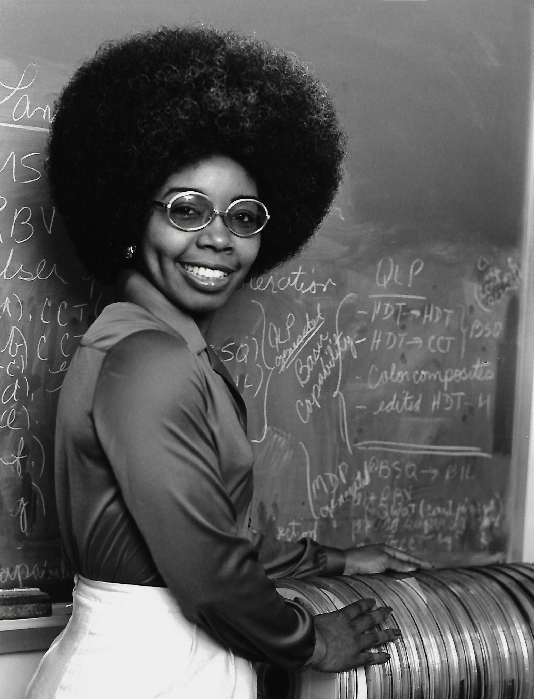

Sobre
Valerie Thomas
Thomas se interessou por ciências quando criança, depois de observar seu pai mexendo na televisão e vendo as partes mecânicas dentro da TV. Aos oito anos, ela leu o primeiro livro sobre eletrônica dos meninos , o que despertou seu interesse em uma carreira científica. Seu pai não a ajudaria com os projetos do livro, apesar de seu próprio interesse por eletrônica. Na escola só para meninas que frequentou, ela não foi incentivada a buscar cursos de ciências e matemática, embora tenha conseguido fazer um curso de física.